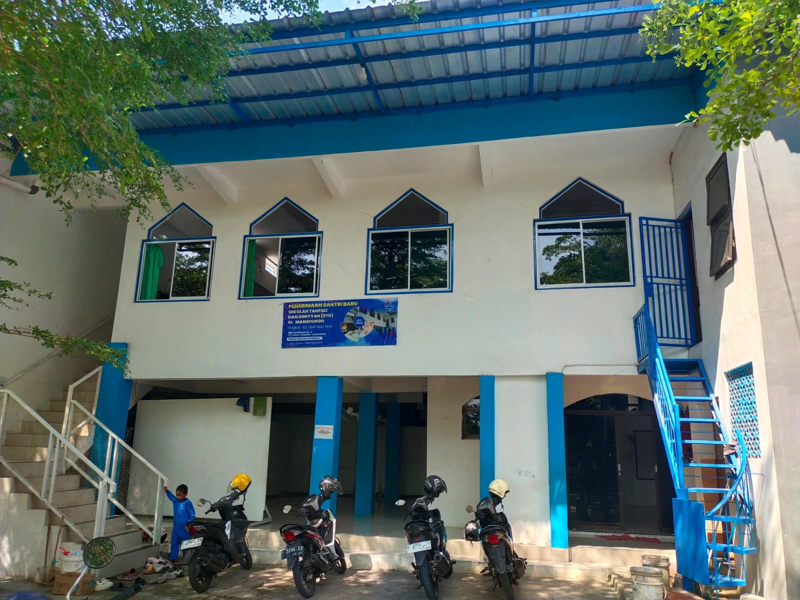
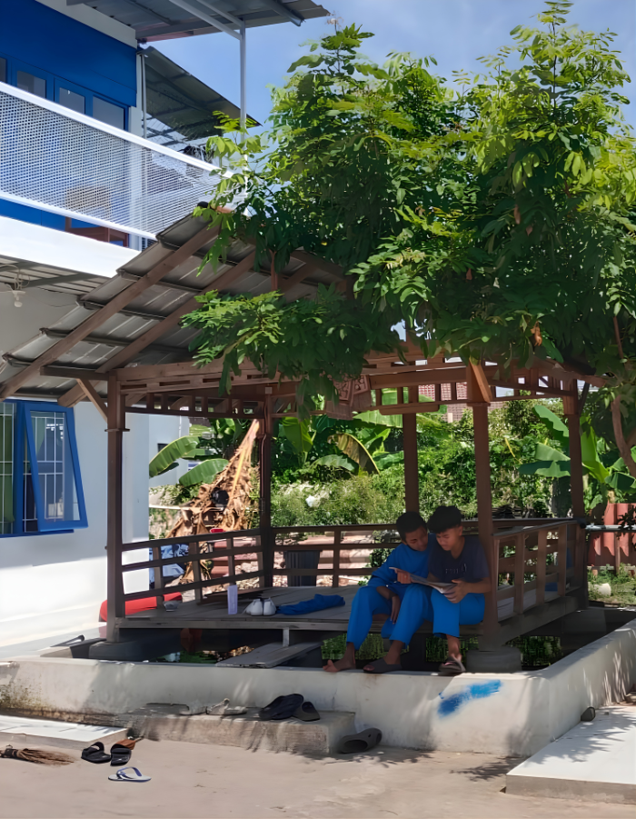
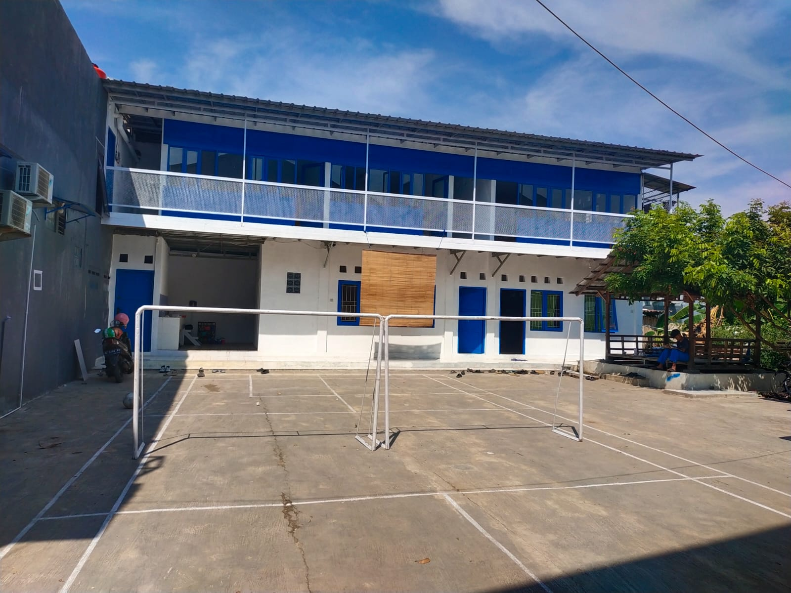
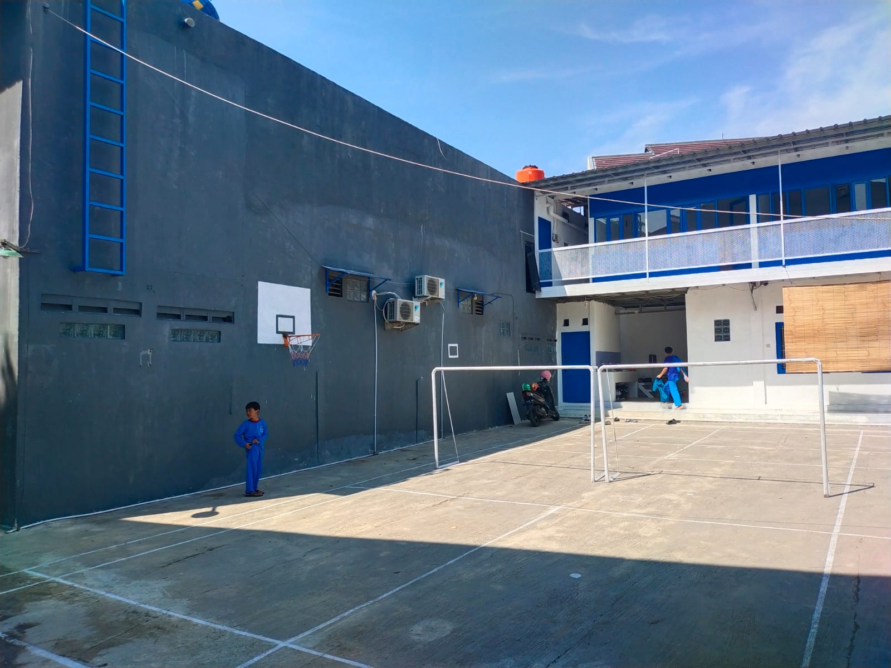

Dibawah Naungan Yayasan Al Ghuroba Al Islamiyyah Cirebon
Mahad Al-Manshuroh didirikan dengan semangat untuk mencetak generasi yang beraqidah shohihah sesuai dengan pemahaman Salafush Shalih. Kami berfokus pada pendidikan Al-Qur'an (Tahfizh) dan ilmu syar'i dasar tanpa mengesampingkan ilmu pengetahuan umum yang bermanfaat.
Terletak di Kel Larangan Kec Harjamukti Kota CIREBON. Insya Allah kami berusaha menyediakan lingkungan belajar yang kondusif dan Islami, baik untuk jenjang SD (Non-Asrama) maupun jenjang SMP-SMA (Asrama/Muqim) untuk putra dan putri .
Hafalan 30 Juz (Target SMA)
Kurikulum Diniyyah Salaf



